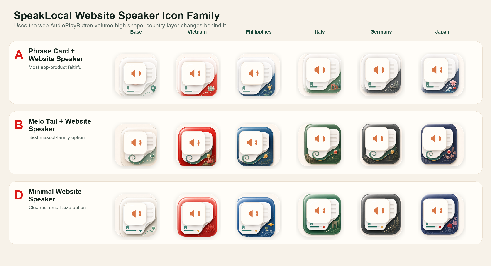
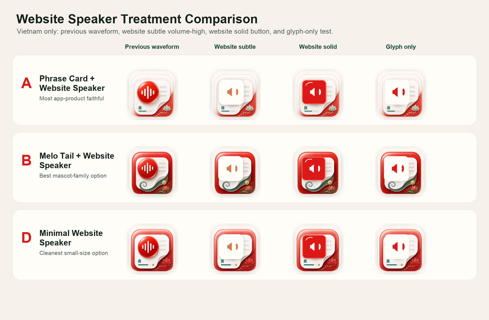
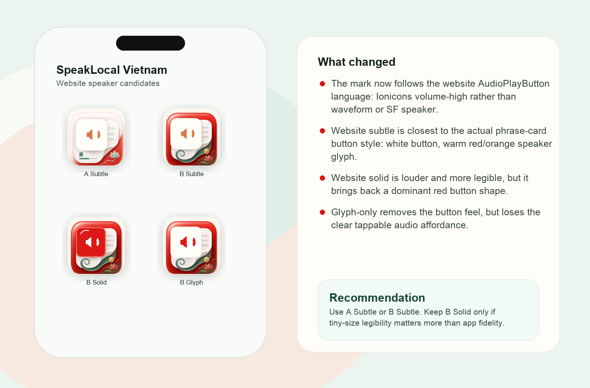
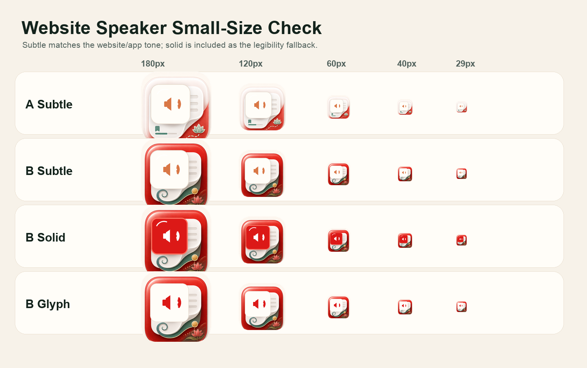
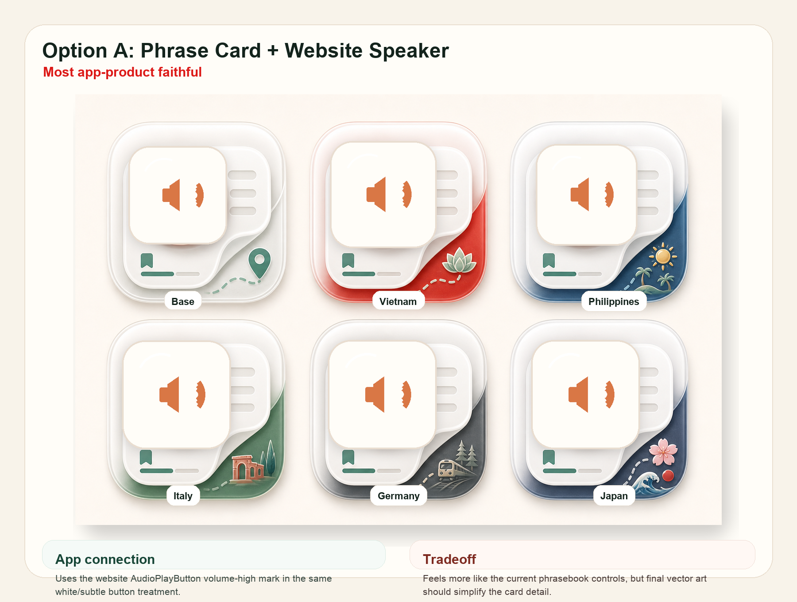
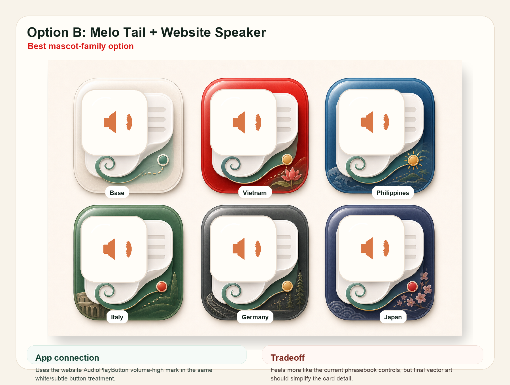
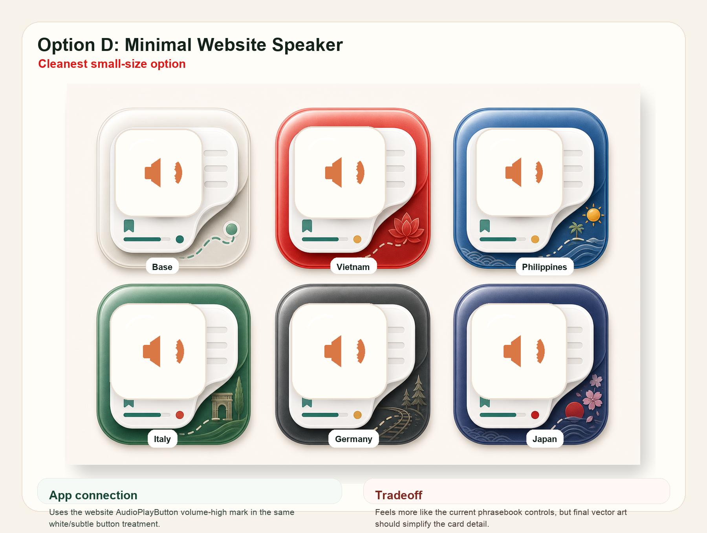

Website speaker v4
SpeakLocal Icon Family With Website Speaker
This pass swaps the red waveform circle for a website-style volume-high speaker mark, closer to the phrase audio button already used in the product.
Country Family
The shared icon system stays fixed while Vietnam, Philippines, Italy, Germany, and Japan swap the country layer behind the phrase card.

Treatment Comparison
The subtle version is closest to the app and website audio button. The solid version is included as a legibility fallback.

Vietnam Context
A Subtle and B Subtle are the real decision pair. B keeps Melo as a small tail cue without turning the icon into a mascot badge.

Small-Size Check
The final icon should simplify card detail and sharpen the speaker glyph. This sheet shows the current concept at compressed sizes.

Annotated Sheets



Design Read
A SubtleMost product-faithful. Reads like a phrasebook audio card.
B SubtleBest family candidate if Melo should stay in the icon system.
B SolidMore legible, but the red block starts to dominate again.
B GlyphCleaner, but less obviously tappable or audio-button-like.